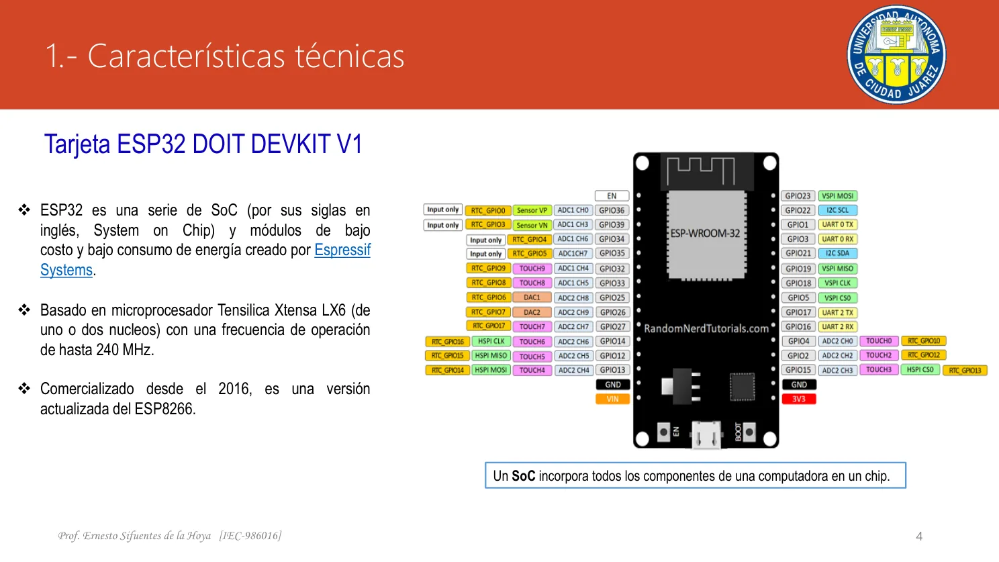
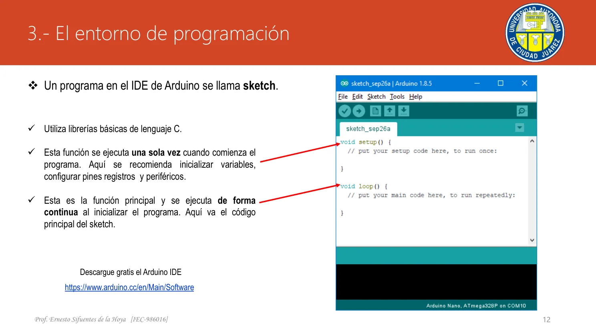
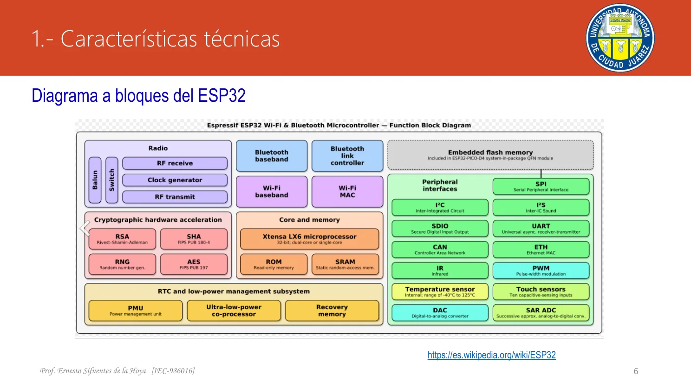
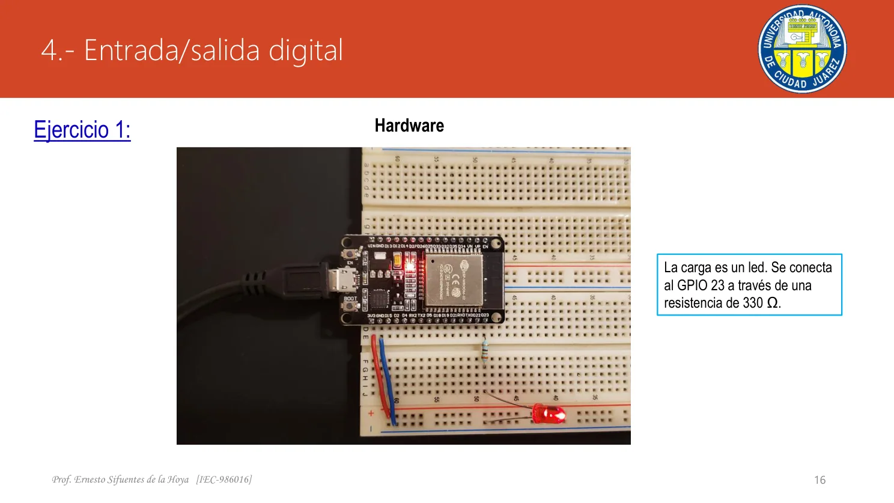

ESP32: programación y entradas/salidas digitales
Arquitectura, Arduino IDE, GPIO, temporización bloqueante/no bloqueante y mediciones con instrumentos reales.
Plan de trabajo
Clase 1 · Fundamentos y programación (120 min)
20 min: arquitectura y GPIO · 30 min: instalación y verificación Arduino IDE · 25 min: setup()/loop() · 45 min: programa delay() y primer montaje.
Producto: LED conmutando y primer registro de periodos.
Clase 2 · Validación experimental (120 min)
20 min: millis() · 40 min: medición con osciloscopio · 30 min: contador serial · 30 min: medición de corriente, análisis y retroalimentación.
Producto: tabla comparativa, capturas y discusión del error.
Fundamentos de ingeniería
Arquitectura y entorno de desarrollo
El ESP32 clásico integra CPU, memoria, GPIO, ADC, temporizadores, UART y conectividad. Trabajaremos con la placa ESP32 DOIT DevKit V1 y Arduino IDE. Cada programa utiliza setup() para configurar periféricos y loop() para ejecutar el comportamiento repetitivo.


Montaje eléctrico de baja tensión
Conecte GPIO23 → resistencia de 330 Ω → ánodo del LED → cátodo a GND. Para corriente, utilice multímetro en serie.


Temporización de una salida digital
Para periodos de 250, 500, 1000 y 2000 ms, programe semiperiodos de 125, 250, 500 y 1000 ms, respectivamente. Medir el tiempo con osciloscopio permite distinguir periodo nominal, jitter, sobrecarga de ejecución y resolución temporal.
Corriente y consumo de la carga
La caída directa del LED depende del componente y la corriente; el valor calculado es una aproximación. Realice la medición de corriente insertando el multímetro en serie y seleccionando una escala apropiada.
Simulación interactiva
Conmutación de una salida digital
Cálculo de corriente de un LED
Programación interactiva
Seleccione un programa, examine sus instrucciones, modifique parámetros y descargue su versión. La compilación y carga al ESP32 se realizan con Arduino IDE; este editor no ejecuta firmware.
Prácticas experimentales
Complete el montaje en baja tensión, ejecute el firmware y registre datos medidos; no utilice números simulados como evidencia experimental.
A1 · Conmutación temporizada mediante delay()
Programar cuatro periodos, medir con osciloscopio T, T_HIGH y T_LOW; comparar con el valor nominal.
A2 · Temporización no bloqueante mediante millis()
Repetir los cuatro periodos; comparar error de temporización y capacidad para ejecutar otras tareas.
A3 · Contador de ciclos mediante comunicación serial
Contar transiciones LOW→HIGH en 30 s y comparar con el cálculo basado en el periodo medido.
A4 · Consumo eléctrico del LED
Medir corriente ON y OFF con amperímetro en serie; comparar con el cálculo por ley de Ohm.
Registro de mediciones
Introduzca los datos obtenidos con el equipo físico. La tabla calcula el error sin alterar las lecturas originales.
| T nominal (ms) | T medido (ms) | HIGH (ms) | LOW (ms) | Error (%) |
|---|---|---|---|---|
| 250 | — | |||
| 500 | — | |||
| 1000 | — | |||
| 2000 | — |
Error relativo del periodo: |T_medido − T_nominal| / T_nominal × 100. Compruebe que T_medido ≈ t_HIGH + t_LOW.
Evaluación formativa
Responda individualmente. La retroalimentación permite revisar los conceptos; la valoración oficial corresponde al profesor.
Tutor de aprendizaje con IA
El tutor formula preguntas, contrasta argumentos con la teoría y solicita evidencia experimental. No sustituye la medición ni debe inventar resultados.
Materiales y recursos
Consulte los documentos originales para ampliar los conceptos y desarrollar las actividades experimentales.
Presentación · Microcontrolador ESP32
36 diapositivas · características técnicas, Arduino IDE, GPIO y ADC.
Actividades L3 · GPIO
11 páginas · conmutación temporizada, millis(), contador de ciclos, mediciones y cuestionario.